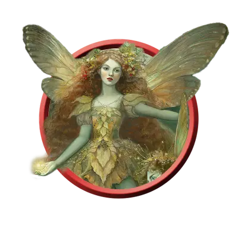

Чудоносная пикси
Pixie Wonderbringer
Крошечная Фея, Нейтральная Добрая

Класс Защиты 15 Инициатива +5 (15)
Хиты 60 (24к4)
Скорость 10 футов, Полёта 30 футов
| мод | спас | ||
|---|---|---|---|
| СИЛ | 2 | −4 | −4 |
| ЛОВ | 20 | +5 | +5 |
| ТЕЛ | 10 | +0 | +0 |
| мод | спас | ||
|---|---|---|---|
| ИНТ | 11 | +0 | +0 |
| МДР | 14 | +2 | +2 |
| ХАР | 18 | +4 | +4 |
Чувства пассивное Восприятие 15
Языки Общий, Сильван, Эльфийский
Опасность 5 (1 800 опыта; БВ +3)
Особенности
Сопротивление магии. Чудоносная пикси совершает с Преимуществом спасброски от заклинаний и прочих магических эффектов.
Действия
Мультиатака. Пикси совершает две атаки Пыльцой феи.
Пыльца феи. Бросок рукопашной или дальнобойной атаки: +7, досягаемость 5 фт. или дистанция 60 фт. Попадание: 15 (2к10 + 4) урона Излучением, и цель становится Очарованной или Отравленной (по выбору пикси) до начала следующего хода пикси.
Сотворение заклинаний. Чудоносная пикси сотворяет одно из следующих заклинаний, не нуждаясь в Материальных компонентах (заклинательная характеристика — Харизма, Сл спасброска заклинаний 15):
Неограниченно: Искусство друидов, Невидимость, Пляшущие огоньки
1/день каждое: Обнаружение мыслей, Образ, Полёт
Бонусные действия
Вихрь чудес (Перезарядка 5–6). Пикси сотворяет Жуткий смех Таши, Опутывание или Превращение, не нуждаясь в Материальных компонентах (заклинательная характеристика — та же, что для Сотворения заклинаний).
Бонус мастерства +3
Среда обитания Леса, Страна фей
Сокровища Магические
Пикси
Друзья леса
Пикси — ростом не выше тридцати сантиметров — напоминают крошечных эльфов с крылышками насекомых. Невидимые для чужих глаз, они наблюдают за теми, кто ступает в их лесные владения, и открываются лишь тем, чьи намерения мирны и доброжелательны. Те же, кто приходит с враждой в сердце, быстро становятся мишенью для проказ пикси.
Неудержимые весельчаки, чудоносные пикси прибегают к своей магии, когда необходимо защитить дикую природу.